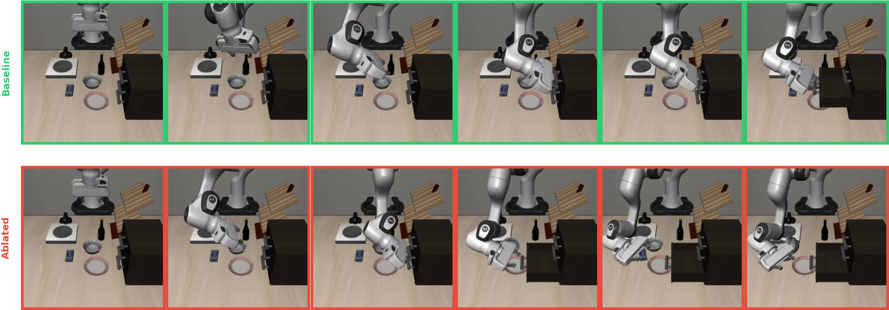

论文笔记：Not All Features Are Created Equal: A Mechanistic Study of Vision-Language-Action Models
论文笔记：Not All Features Are Created Equal: A Mechanistic Study of Vision-Language-Action Models
1. 背景信息与阅读结论
Case Western Reserve University，arXiv v1，2026-03-19。本文研究 VLA 内部表征如何影响机器人动作，结合 activation injection、反事实指令、稀疏自编码器（SAE）和线性探针；不是提出一个更高成功率的策略模型。原文 · 项目页
最值得记住的四点：
- 语言敏感性随任务集显著变化；场景能提示目标时，成功率可能掩盖语言 grounding 的不足。
- 把源任务激活搬到另一场景，能使轨迹更像源任务，却不一定完成目标任务。行为可被控制与任务可迁移是两件事。
- SAE 的表征重建质量必须接受闭环 rollout 检验；逐 token 处理很重要，但 X-VLA 是明确例外。
- 本文部分强消融结论被附录自己的 hook 修正削弱。“发现可解释概念”和“找到了语义动作开关”之间仍有明显证据缺口。
我的判断：值得借鉴的是把表征分析接到真实 rollout 的实验框架。对“所有模型视觉主导”“单特征 kill-switch”“目标与动作已被因果分离”的概括，应比作者更保守。以下基于 v1 官方 HTML 主文与附录 A–L；未运行代码或复现实验。
2. 关键问题：看见一个概念，能否说明动作由它控制？
Golden Case：让机器人打开柜子的中间抽屉。 Figure 6 的正常 rollout 会抓住中间抽屉把手并拉开；作者把第 8 层的 OPEN 相关 SAE 特征置零后，机器人改开底部抽屉。直观看，这很像找到一个与目标选择有关的“开抽屉”开关。

图中应比较上下两排的目标抽屉：正常运行打开中间层，干预运行转向底层。该图只展示行为差异；不能跳过下面的 hook 局限，把差异直接解释为 OPEN 语义被删除。图片来源：原文 Figure 6。
但这个故事有两个问题。首先，机器人依然会“打开”，失败是打开了错误的抽屉，因此不能仅凭特征名认定删掉了 OPEN 语义。更重要的是，该案例使用后来被作者指出有问题的 full-layer hook，破坏可能来自干预范围，而非所选概念本身（Appendix I、F.3）。
这正好说明本文真正要解决的识别问题：VLA 同时看到图像、语言与本体状态；一个激活与“打开抽屉”相关，可能只是记录场景、轨迹阶段或任务标签。即使 probe 很准，也未必找到了策略实际使用的因果变量。
3. 关键方法：从整条轨迹替换，逐步缩小到特征干预
3.1 沿同一个案例走完实验
以“打开中间抽屉”为成功源 episode A。冻结原有 VLA，在正常运行时记录指定层激活，再开展三类不同问题的测试（§3.2–3.5）：
- 换指令：保留观察条件，改为空指令、否定、对象替换或中途切换，检查目标成功率是否改变。这里检验的是策略对语言变化的响应。
- 注入激活：在另一个 episode B 中，逐推理步骤以 A 的激活替换指定层，继续生成动作并执行。B 可以是空指令、同场景不同目标、不同场景或不同随机种子。观察轨迹像 A 还是 B，以及 B 的任务是否成功。
- 缩小干预：从相关任务激活中训练 SAE，比较含 OPEN 与不含 OPEN 的任务，找出候选特征；仅移除这些特征对应的解码贡献，再看动作改变。Figure 6 展示的是这条分析路线中的失败案例，但其具体 hook 不足以支持干净的语义归因。
前两步从“模型是否响应输入”走到“某层表征能否接管行为”，第三步才尝试定位控制因素。整层接管的证据不能自动下放为单概念机制证据。
3.2 注入携带了什么？
作者的操作是 $H_B^{(\ell)}\leftarrow H_A^{(\ell)}$，其中 A 是使用正确指令完成任务的 rollout。双通路模型还分别对 VLM backbone 与 action expert 注入。
为什么要区分同场景与跨场景？同场景共享几何，注入后目标改变比较容易解释；跨场景连物体坐标和运动阶段都不同，任务失败可能来自坐标绑定，也可能来自时间错位或离开自然激活分布。轨迹是否朝源任务靠近，可以排除一部分“纯随机损坏”解释，但排不完这些混杂。
还要注意：**A 的激活来自带正确语言的运行，且 PaliGemma 本身是多模态 backbone。**即使把它注入空指令 B 后恢复动作，也不能据此说注入内容只含视觉、语言完全未参与。这更直接证明该位置的联合表征足以携带行为信息。
3.3 SAE：保留 token 结构，并尽量保留重建残差
Appendix D 给出 tied-weight TopK SAE。对每个 token 的 $h\in\mathbb R^d$：
$z$ 是稀疏特征，通常 $k=64$，字典宽度为 $4d$ 或 $8d$。这里训练 SAE 和探针，不以分析实验更新被测策略。附录以 $d=1024$、50 个 action token 为例，将 $[B,50,1024]$ 展平为 $[50B,1024]$ 后共享同一个 SAE，处理完再还原位置。它不是每个位置单独训练一个 SAE。
直觉上，一段动作里“接近把手”和“拉开抽屉”的 token 不应被先平均掉；但这只是设计动机，是否需要逐 token 处理仍须看各架构的 rollout 对照。
特征筛选使用 $\mathrm{score}_f=d_f\cdot\mathrm{freq}_f$：$d_f$ 是概念存在/不存在时激活差异的 Cohen's d，$\mathrm{freq}_f$ 是进入 active TopK 的比例。后者避免挑出平均统计好看、实际很少被激活的特征。任务间对比产生的是概念关联，仍可能混入场景和任务身份。
置零选中维度后，作者给出的干预为：
这保留原始 $h$，只加上删特征带来的差值；若 $m=\mathbf1$，应当严格回到原模型。相比直接用 $\hat h'$ 替换 $h$，它避免把整体 SAE 重建误差混进概念效应。公式合理不保证 hook 实现正确，这正是附录问题的核心。
Appendix D.1 报告每个 SAE 50 万激活样本、batch size 4096、100 epochs、学习率 $3\times10^{-4}$ 与 cosine decay；这是复现入口，不能把该节的 50-token/1024 维示例套到所有模型，OFT 等另有配置（Appendix K.1）。
4. 数据与评估：规模大，但不是统一协议下的模型排行榜
五个 VLA 是 $\pi_{0.5}$（3B）、OpenVLA-OFT（7B）、X-VLA（约 1B）、SmolVLA（450M）、GR00T N1.5（3B）；ACT（80M）是无语言对照。Table 1–2 报告总计 394,000+ rollout、424 个 SAE 的配置计数，覆盖 LIBERO、MetaWorld、SimplerEnv 与 ALOHA。全部是仿真环境，每个模型没有跑遍所有 benchmark 或所有干预类型（Appendix B）。
本文训练资料主要是模型运行中采集的激活，而非新增机器人示范数据。需要区分任务成功率、动作/轨迹 cosine similarity 和源行为 override：轨迹像源任务不意味着在当前场景抓到了正确物体。
实验样本量应以逐表说明为准。Appendix K.3 泛称每条件每任务 5 episodes、最多 300 steps，但正文和附录还出现 3、10、20、250 次及 520-step 上限；因此不能用这个总述统一解释全部统计。
5. 关键结果与证据边界
5.1 语言是否起作用，要在同一模型内按任务集看
Table 5 用正确、空和错误对象指令对照任务成功率：
| 模型 / LIBERO suite | 正确指令 | 空指令 | 错误对象指令 |
|---|---|---|---|
| OFT / object | 100% | 100% | 100% |
| OFT / goal | 100% | 10% | 10% |
| X-VLA / object | 100% | 60% | 60–90% |
| X-VLA / goal | 94% | 10% | 4–10% |
| GR00T / goal | 97% | 0% | 0% |
OFT 的同模型对照很清楚：object suite 高分不证明听懂指令，goal suite 则显示语言能成为必要输入。作者用“视觉是否足以识别目标”解释这种差异，这与结果相容；但不同 suite 同时改变了场景、任务和难度，尚不是隔离“歧义程度”的严格控制实验。
X-VLA object 从 100% 到 60% 已下降 40 个百分点，称其“基本不受语言影响”过强。$\pi_{0.5}$ 的反事实实验报告 $p=0.247$，同时第 17 层可用 99.3% 准确率识别 prompt 类别（§4.4）：这支持信息可解码与所测行为敏感性脱钩；不显著不能证明语言从不被使用。尤其 Table 26 又报告其 goal 跨指令无注入条件从 91.5% 到 0%，不同指令构造/实验批次的对应关系需要代码核实 [?]。
5.2 跨任务注入改变轨迹，不等于搬运了抽象技能
Table 4 中，X-VLA 在 3,150 个跨任务对上目标成功率为 0%，但 99.8% 的注入轨迹与源任务更相似；$\pi_{0.5}$ 在 1,968 对上对应为 2.6% 和 99.6%。因此失败不是简单“注入没生效”，而是被导向了与源场景相容的运动。
这支持所注入表征携带强烈的空间/运动信息。“模型没有抽象任务表征”仍超出证据：强行覆盖时序状态，也能压过同时存在的抽象表示。Appendix B 承认时间错位混杂；下一步应加入物体坐标对齐与运动阶段对齐，再检验技能是否仍不能迁移。
OFT 并未普遍归零，Table 4 报告 goal 约 50%、其他 suite 可能接近原水平；不能照抄引言“所有架构灾难性失败”的统一描述。另一个不宜作为强证据的条目是 OFT 的“null injection”：§4.2 称恢复 14–15%，Table 3/19 却描述 layer zeroing。究竟是重放还是置零，v1 表述不一致 [?]。
5.3 SAE 是否可用，应先看接回策略后的成功率
Table 7 的 $\pi_{0.5}$ LIBERO-10 对照，每种条件汇总 2,500 episodes：
| 条件 | 成功数 | 成功率 |
|---|---|---|
| 原策略 | 1862 / 2500 | 74.5% |
| 逐 token SAE | 1748 / 2500 | 69.9% |
| Mean-pooled SAE | 9 / 2500 | 0.4% |
在作者报告 pooled reconstruction 有 95–98% explained variance 的情况下，动作几乎全毁。**优化激活空间的平均误差，不能保证保留控制器最敏感的方向。**逐 token 处理大幅减轻问题，但仍比原策略低 4.6 个百分点，也不是完全无损；Table 7 个别任务甚至明显改善，说明平均数不能代替逐任务 fidelity 审计。
例外同样关键：§4.6 报告 X-VLA mean-pooled rollout fidelity 为 94–100%，逐 token 为 92–98%；GR00T 的 VL-SA pooling 改善的是 EV（83–89% 到约 99%），不能直接当成成功率收益。合理规则应是逐层、逐架构验证，不能把“per-token 必需”写成 VLA 定律。
5.4 通路分工有支持，但特征级强因果结论需要降级
SmolVLA 的跨任务注入中，expert 与 VLM 的 source-like 比例分别为 15.8% 和 9.0%（732 对）；Table 24 的 horizon-10 oracle ratio 分别为 0.58 和 0.13。这个 ratio 是 probe $R^2$ 除以 oracle $R^2$，不是直接测得“保留了百分之多少世界状态”。这些结果结合 $\pi_{0.5}$ 的主动错运动/停滞差异，支持 expert 更贴近动作动态、VLM 更贴近任务语境的分工趋势（§4.5）。
但 Appendix E.1 只说明替换 20/1024 个目标判别维度通常不破坏任务。没破坏动作不等于成功替换目标；缺少等维随机子空间对照和目标切换结果，尚不足以证明干净的因果解耦。
更实质的局限来自 hook：
| 原文位置 | 表面结论 | 复核后的读法 |
|---|---|---|
| Table 9 | PUT 消融使多个 suite 接近零成功 | 作者承认 full-layer hook 夸大效应 |
| Table 16、Figure 6 | 单特征/OPEN 特征造成严重失败 | 不能直接归为语义 kill-switch，案例受同类 hook 问题影响 |
| Appendix F.3 | 更正为 MLP-targeted 消融 | 2–5 个概念特征消融不显著，$p=0.975$，平均变化 +3.3%（原文记法） |
| Figure 9 图注 | 早期比晚期更关键 | 明确说该图时间梯度是未修正 hook 的 artifact；有效跨架构时间结果另指向 GR00T Table 15 |
F.3 正文还说旧表的相对模式仍有参考价值，与 Figure 9 更强的否定不完全一致。Table 13 的 boosting hook 归属、正文所说倍率与表中条件也不一致 [?]，这里不把它用作定量依据。
所以 §4.6 跨模型“kill-switch 分布”和 zero-effect 比率只能先视为作者报告的现象；在逐项核实 hook、空干预保真和样本量前，不宜据此推出“对象绑定比动作执行更脆弱”的统一机制。
6. Insights：哪些实验值得真正带走？
1. 把干预保真当作因果解释的前置门槛。 本文既有高 EV 却坏 rollout，也有修正 hook 后效应消失。复现应先验证 mask 全一时输出与原模型一致，再比较重建但不删特征、概念特征删除、同数量且激活强度匹配的随机特征删除。这个顺序能区分 SAE 误差、hook 副作用与特征选择的增量贡献。
2. 语言评测需要制造“视觉相同、正确动作不同”的数据。 OFT 的 object/goal 反差说明单一场景成功率很容易奖励视觉捷径。更有辨识力的测试是在相同物体布局与初始状态下，只改中间/底部抽屉目标，既评原目标失败率，也评新目标成功率；后者才能区分理解新指令与单纯受扰动失败。
3. 跨任务 patching 最有价值的后续是坐标与阶段对齐。 既然源轨迹接管率高，可将源激活先按任务阶段配对，进一步尝试物体相对坐标对应。若对齐后恢复迁移，问题可能在表征坐标或接口；若仍失败，再结合子空间干预讨论技能组合性，证据会比整层覆盖失败更有辨识力。
7. 连接与发现
- MOC-Interpretability — 将 SAE 的描述性概念、重建保真与闭环行为因果检验分开；尤其适合作为干预实现错误如何改变结论的案例。
- MOC-VLA — Topic：VLA 特征因果效力的分层检验，证明 SAE 特征并非生而平等。